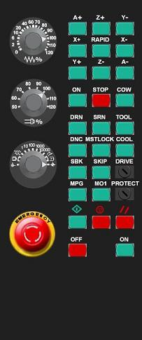
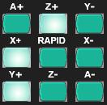
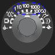
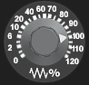
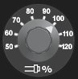
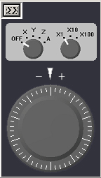

| FANUC18iM操作面板操作 |
机床操作面板位于窗口的右下侧，如下图所示 , 主要用于控制机床运行状态，由模式选择按钮、运行控制开关等多个部分组成，每一部分的详细说明如下：

模式选择： EDIT （编辑） /MDI （手动数据输入） /JOG （手动） /INC 增量进给 /AUTO （自动循环） /REF （回参考点）
程序运行控制开关
程序运行开始；模式选择旋钮在“ AUTO ”和“ MDI ”位置时按下有效，其余时间按下无效。
程序运行停止；在程序运行中，按下此按钮停止程序运行。
机床主轴手动控制开关
手动主轴正转
手动主轴反转
手动停止主轴
手动移动机床各轴按钮

增量进给倍率选择按钮

选择移动机床轴时，每一步的距离： 1 为 0.001 毫米， 10 为 0.01 毫米， 100 为 0.1 毫米， 1000 为 1 毫米， 10000 为 10 毫米。置光标于旋钮上，点击鼠标左键选择。
进给率 (F) 调节旋钮

调节程序运行中的进给速度，调节范围从 0 ～ 120% 。置光标于旋钮上，点击鼠标左键转动。
主轴转速倍率调节旋钮

调节主轴转速，调节范围从 0 ～ 120% 。
手脉

使手轮按钮  处于有效状态，把光标置于手轮上，选择轴向，按鼠标左键，移动鼠标，手轮顺时针转，相应轴往正方向移动，手轮逆时针转，相应轴往负方向移动。
处于有效状态，把光标置于手轮上，选择轴向，按鼠标左键，移动鼠标，手轮顺时针转，相应轴往正方向移动，手轮逆时针转，相应轴往负方向移动。
单步执行开关

每按一次程序启动执行一条程序指令。
程序段跳读
自动方式按下此键，跳过程序段开头带有“ / ”程序。
程序选择停
自动方式下，遇有 M01 程序停止。
机床空运行
按下此键 , 各轴以固定的速度运动。
冷却液开关
按下此键 , 冷却液开；再按一下，冷却液关。
在刀库中选刀
按下此键 , 刀库中选刀。
程序编辑锁定开关
置于“ ”位置，可编辑或修改程序。
机床锁定开关

按下此键，机床各轴被锁住，只能程序运行。
M ST 锁住
程序运行中，此按钮处于有效状态时，程序中的 M 、 S 、 T 代码不被执行。
紧急停止旋钮